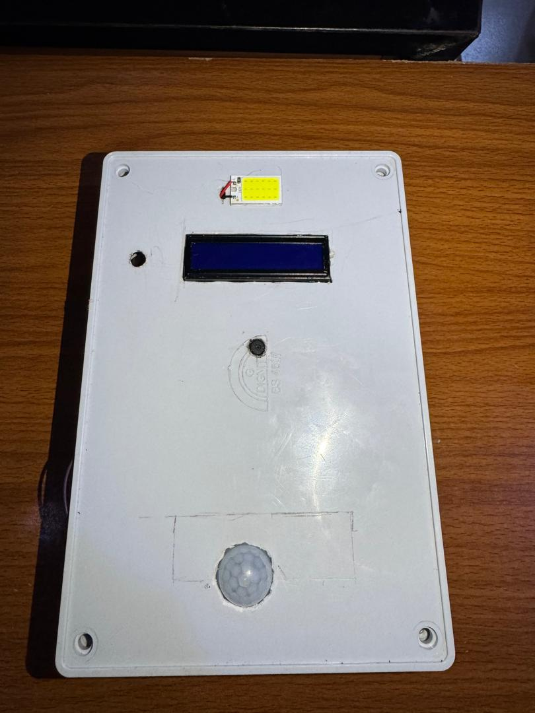
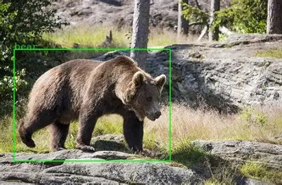
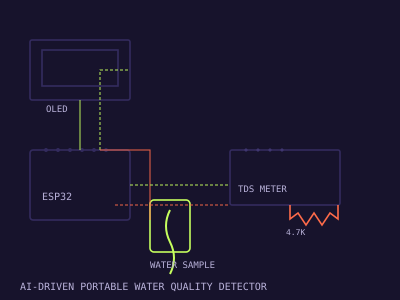

AI & Data Science
Facial Recognition Attendance System
An attendance system that uses facial recognition to identify students and log attendance automatically.
Masud Sani · 2025-11
Details
An attendance system that uses facial recognition to identify students and log attendance automatically.
Masud Sani · 2025-11
Details
An object detection system built on YOLO to identify bears in image and video feeds.
Masud Sani · 2025-08
Details
A portable device that classifies water quality into Safe, Caution, and Unsafe categories using an AI classification model.
Femi Olorundare · 2025-09
Details
A computer vision system that tests for malaria from a blood sample in under 5 minutes.
Olorunfemi Grace Temitayo, Ruqayya Labbo, and Khadija Khalid · 2026-05
🏆 Winner, Huawei ICT Global Competition - Innovation Track, 2026
DetailsAn attendance system that uses facial recognition to identify students and log attendance automatically.
By Masud Sani · 2025-11
An object detection system built on YOLO to identify bears in image and video feeds.
By Masud Sani · 2025-08
A portable device that classifies water quality into Safe, Caution, and Unsafe categories using an AI classification model.
By Femi Olorundare · 2025-09
A computer vision system that tests for malaria from a blood sample in under 5 minutes.
By Olorunfemi Grace Temitayo, Ruqayya Labbo, and Khadija Khalid · 2026-05
🏆 Winner, Huawei ICT Global Competition - Innovation Track, 2026